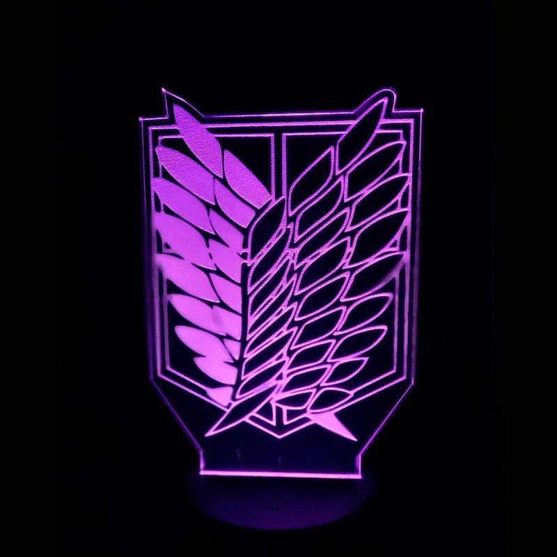
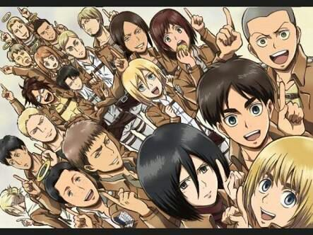
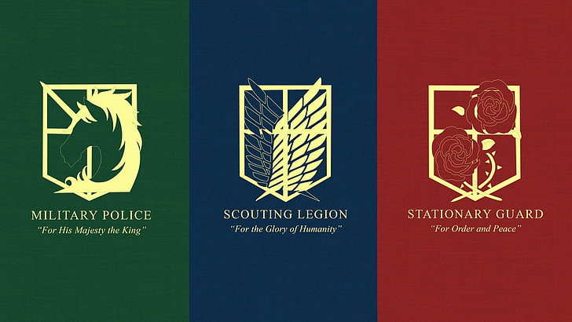

Attack on Titan
Orden para ver Attack on Titan
- Temporada 1
- OVA de la Temporada 1
- OVA "Sin arrepentimientos
- Temporada 2
- OVA "Chicas perdidas"
- Temporada 3 (primera mitad)
- 'Ataque a los Titanes: Junior High' [opcional]
- Temporada 3 (segunda mitad)
- Temporada 4 (primera parte)
- Temporada 4 (segunda parte)
- Temporada 4 (loscapítulos finales:primera parte)
- Temporada 4 (loscapítulos finales:segunda parte)
Trama
Desde que 100 años atrás los titanes apareciesen de la nada y llevasen a la humanidad al borde de la extinción, la población vive encerrada en ciudades rodeadas de enormes muros llamados Maria, Rose y Sina, con el fin de protegerse de la aparición de nuevos titanes. Ese es el día a día de Eren Jaeger, un joven que sueña con el poder estar fuera de los muros, fastidiado del conformismo con el que la humanidad vive encerrada como si fuese ganado. La repentina llegada de los titanes Colosal y Acorazado aplastará la ilusión de paz en la que hasta ahora vivía la sociedad humana y hará que Eren, junto a su hermana adoptiva Mikasa Ackerman y su mejor amigo Armin Arlert, se embarque en una arriesgada odisea de venganza en nombre de la humanidad.
Fuente:
Personajes principales
- Eren Jaeger
- Mikasa Ackerman
- Armin Arlet
- Jean Kirstein
- Marco Both
- Sasha Blouse
- Connie Springer
- Ymir
- Historia Reiss
- Levi Ackerman
- Hange Zoë
- Erwin Smith
Amigos de Eren, Mikasa y Armin
Legión de reconocimiento
Legiones

Los Militares, también conocidos como las Fuerzas armadas de Paradis, son la principal milicia de los habitantes de la isla Paradis, quienes fueron originalmente entrenados con el propósito de defender a dicho territorio de los Titanes. Es un ejército a tiempo completo, profesional y capacitado para hacer frente a los titanes.
El ejército está dividido en tres escuadrones: